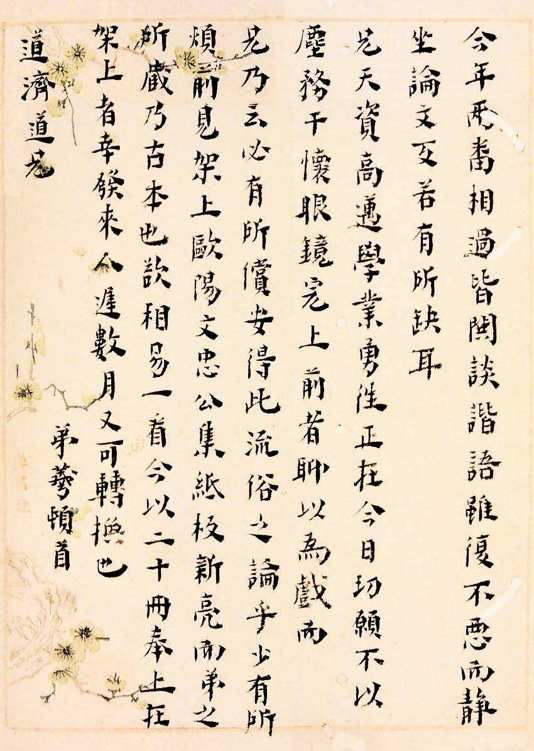
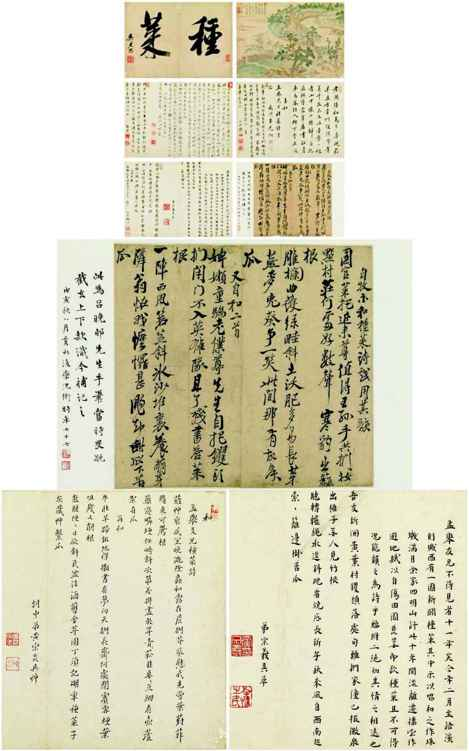
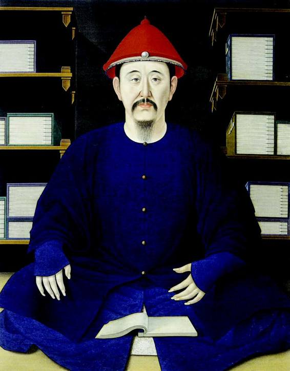
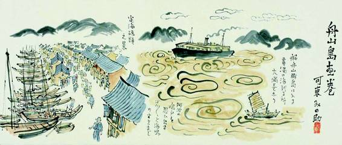
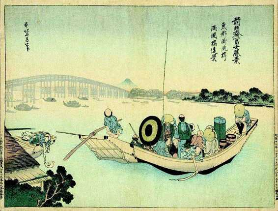

他自己的人生也将翻开新的一页，上面写着一个“终”字：“初锢之为党人，继指之为游侠，终厕之于儒林。”那是他最后的归宿。
尽管后来人们差不多只知道他是一位大儒，可实际上，他和“儒林”这个字眼的关系很不谐顺，很费周折。
他一生的功名，仅至生员为止。他于十三岁（天启三年，1623）“补仁和博士弟子员”（仁和县今不存，已为杭州市郊一部分），成为一个县学学生，而这竟是他一生最高学历。生员，俗称秀才，是被地方官学录取的学生，算是一种正式功名，但没有做官资格。在明代，做官通常须有举人以上资格，最起码也得是贡生（由地方官学选拔出来，进入国子监即国家最高学府的学生）。以上二者，黄宗羲毕生不曾获得，更不必说进士出身。
他几度乡试（举人资格考试），全部暴腮。二十岁（崇祯三年，1630）在南京“始入场屋”，落榜；文震孟读了他的考卷，“嗟叹久之，谓：‘异日当以大著作名世，一时得失，不足计也。’”竟似已预见他功名无望，将来只能以“大著作名世”。二十六岁（崇祯九年，1636），在杭州第二次参加投考，也未果。二十九岁（崇祯十二年，1639）又到南京应试，仍然货而不售。三十二岁（崇祯十五年，1642），长途北上，试于北京，还是铩羽，“阳羡周相国延儒欲荐公为中书舍人，力辞不就”，周延儒大概看在烈士后代分上，见他一考再考不中，想“荐”（不经科举正途）他做个小官，被拒绝了。从头到尾，四回乡试，屡战屡败。

黄宗羲手札
黄宗羲嗜书，年轻时家贫，曾组织抄书会，抄而致之。后来与吕留良的龃龉，也跟书有关。此信是他在别人处见到新版欧阳修文集，迫切欲览，欲以所藏古本与对方换阅。

《种菜诗唱和诗册》
黄宗羲、吕留良交谊的见证。黄诗序云：“孟举兄不得见者十一年矣，今年二月至语溪⋯⋯”可知事当其访吕留良时。孟举乃当时名诗人吴之振的表字，此件即其后人所藏。参与唱和者凡十四人，图中央为吕留良手迹，下部为宗羲（右）、宗炎（左）黄氏兄弟手迹。

清圣祖玄烨
即康熙皇帝。黄宗羲晚年盛称他“圣天子”，誉其统治“五百年名世，于今见之”。此点曾遭章太炎等痛诋。然若不抱偏见，康熙的开明、睿达与仁笃，毕竟少见。况且对于政治，黄宗羲还有一个根本观点：“不在一姓之兴亡，而在万民之忧乐。”

日人所绘《舟山岛画卷》
画中所绘，已是二十世纪上半叶之舟山。1649 年11 月，黄宗羲正是从舟山启程，作为鲁监国代表之一，前往日本乞师。

日本明治风俗画
黄宗羲记其乞师日本见闻：“承平久矣，其人多好诗书、法帖、名书、古奇器、二十一史、十三经⋯⋯故老不见兵革之事”。
以他的才具，大家都莫名其妙。曾有朋友来黄竹浦乡下造访，“村路泥滑。同来沈长生不能插脚，元子笑言：‘黄竹浦，固难于登龙门也。’”[38]
从自身找原因，他小的时候不很以举业为念。“课程既毕，窃买演义，如《三国》《残唐》之类数十册，藏之帐中，俟父母熟睡，则发火而观之。”[39]用全祖望的话说，“垂髫读书，即不琐守章句”，“每夜分，秉烛观书，不及经艺”。[40]总之，不是循规蹈矩的好学生。等到父亲卷入党祸，他的家庭与生活又失去了平静，备历坎坷，“无暇更理经生之业，不读书者五年”。南京第一次参加乡试时，对科举完全一窍不通，由新结识的好友沈寿民（眉生）临时辅导，手把手地教他，“开导理路，谆谆讲习，遂入场屋。”[41]
有些大才槃槃之人，对科举不屑一顾，压根儿不入那个笼套，比如前面提到的唐代李泌。黄宗羲倒非如此。他对举业很上心，花了很大工夫，从二十岁到三十来岁，十几年光阴尽付其间。后来谈起这一点，他很懊悔，觉得是徒耗生命，并痛惜当老师刘宗周在世时，自己因为“志在举业，不能有得”，没有珍惜学习的机会，“聊备蕺山门人之一数耳”[42]，只能说滥竽充数。他回忆崇祯七年陪老师从嘉善乘船去省城杭州，舟中刘宗周谈了好些学问上的事，黄宗羲承认：“弟是时茫然。”[43]什么也没听懂。
在科举魔障里，他着实兜了好些年圈子。最终破门而出，得感谢生活和现实：
天移地转，僵饿深山，尽发藏书而读之，近二十年，胸中窒碍解剥，始知曩日之孤负为不可赎也。[44]
关键在于，科举那种铸模子、格式化的路子，跟他的才具天然地格格不入，然而，那时他却并不自知。他足够刻苦和勤奋，“年二十二，读二十一史，日限丹铅一本……手不去编，寒夜抄书，必达鸡唱，暑则穴帐通光，以避蚊蚋。”[45]“既尽发家藏书，读之不足，则抄之同里世学楼钮氏、淡生堂祁氏，南中则千顷斋黄氏，吴中则绛云楼钱氏，穷年搜讨。”[46]换一个平庸之才，这么努力，总会有所回报；在他，效果却很微寡。古往今来的经验显示，考试，仅为普通人才之间比试高低而设，而不世之才，于其中反倒每每显得低能。因为后者巨大的创造性秉赋，很难适应规格化思维的要求和训练。黄宗羲的情况，正是如此。在练习举业的过程中，他心智的泉眼从未捅开，处在“学而不思”的状态，可是，却又做不到如天生擅长或适合应试者那样，真真正正机械、心如枯水、浑浑噩噩地死读书和读死书。
这样，直到中年，黄宗羲竟然还是一副碌碌无为的样子，功名蹭蹬以外，文章学问也没有什么建树。简直可以这样说，倘使他只活四十岁，今天便不会有多少人谈到他——依了先前的情形，谁也看不出他将来有成为中国三百年屈指可数的文化巨擘的潜质，虽然文震孟似乎有一番先见之明，然揆以实际，“异日当以大著作名世”云云，没准只是浮泛的客套罢了，因为那时从他身上，实在看不出什么这类根苗。
一切就像突然来临。这个时间，大体在1649年，以黄宗羲离开健跳、离开鲁王，以及从日本乞师失败而归作为标志。全祖望说：“海氛澌灭，公无复望，乃奉太夫人返里门，于是始毕力于著述。”[47]邵廷采则说：“遂奉太夫人避居山中，大启蕺山书，深研默究。”[48]他自己也有个总结：
受业蕺山时，颇喜为气节斩斩一流，又不免牵缠科举之习，所得尚浅。患难之余，始多深造，于是胸中窒碍为之尽释，而追恨为过时之学。
总之，是突然开窍的。何以致之的呢？“患难之余，始多深造”，这句是关键。前面引过他一段话，也讲到“天移地转，僵饿深山，尽发藏书而读之”，意思相同。过去，为了举业，为了求出身和功名，他也头悬梁、锥刺股地苦读，但全无感觉，更不必说开窍；如今，经过了丧乱、颠沛流离、苦海浮槎，读书一下子闪现了全新的意义，焕发了夺目的光泽，是如此充盈、丰满、厚实。
归根到底，在于他终于发见了自己，走向自己。他这种人，注定不能在名缰利锁的驱赶之下读书和为学，不少读书人属于此类，而黄宗羲不是，或者说真正的思想者都不是。对黄宗羲，那反而是一种毁坏，会把他变得比一般读书人还要乏善可陈。一旦与别人展开试卷上的竞争较量，他简直一无是处；一方面，那是为循规蹈矩、缺乏真正创造性、只适合平步青云的人预备的游戏，另一方面，他自身种种优长——独立的思考与发现、深刻的忧患、巨大的心灵、求知解惑的饥渴与能力等等，全都丢在一边，没有用武之地。所以从头看过，“初锢之为党人，继指之为游侠，终厕之于儒林”，初、继、终，这三部曲在黄宗羲竟是环环相扣、缺一不可。他非得有那样的初，那样的继，才有那样的终。我们也曾讲过阮大铖的故事，他就无须什么初和继，而是三脚两步，一下就厕于儒林。这还不算什么，那时还有“连中三元”的极品，接连解元、会元、状元，一马平川、略无停顿、直登儒林。但显然，那是另一种儒林。中国自古便有两种儒林，黄宗羲所“厕”的，不是考试专家、职场宠儿所“厕”的儒林。这就是为什么他得等到四十岁后，历了许多磨难、看了许多沧桑，才开窍，才找到读书和为学的感觉。当然，也是他自己走了弯路，去跟考试天才们就试卷的优秀一争短长，而浪掷了不少的时光。就此言，那个“天崩地解”、“天移地转”的时代，于他既为不幸，又是一大幸运。如非这现实的激发、刺痛和历练，他也许还觉悟不过来，也许还握不住自己的本质。现在，他无疑牢牢抓在手里，而所有的苦难、愀然和悲闷，都化为一笔巨资，助他一跃登上时代思想之巅。